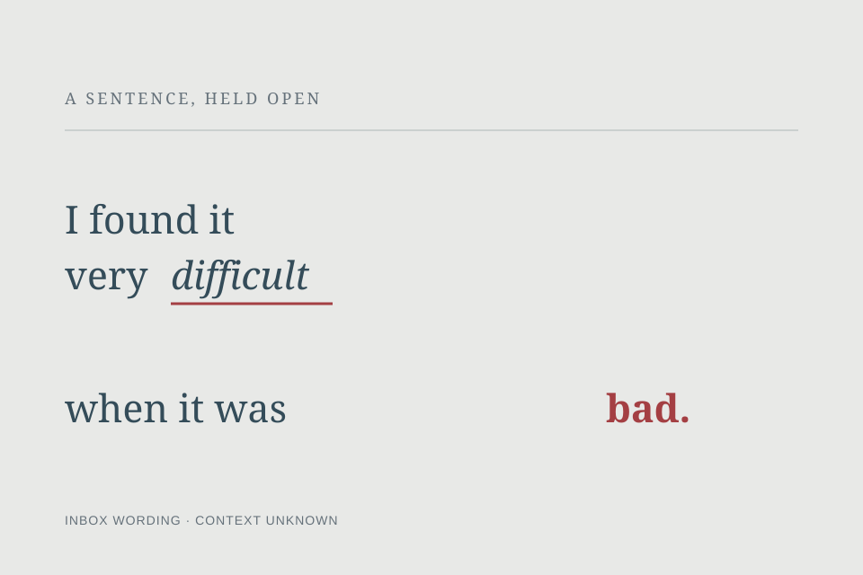

Found Weight
The final word waits at the far edge. The space gives the sentence an ending without supplying its context.

The wording came from an inbox note that attributes it to Chelsy Davy. I have not verified the attribution or its context; the composition is mine.